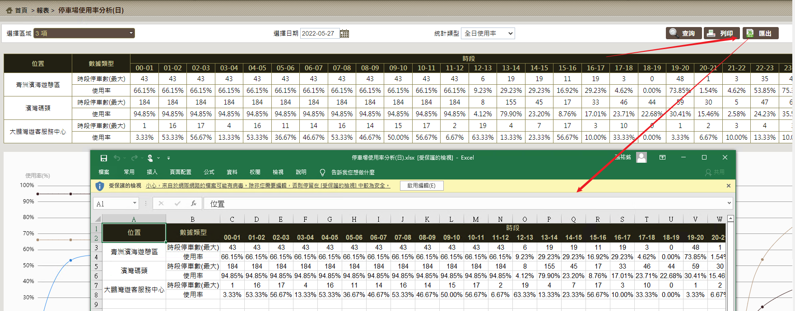

快速將前端的Html table(含CSS)匯出成Excel
table2excel這款好用的套件
table2excel
- 網路上功能類似的套件有不少，名字也都很接近，最後我用的是這款
- https://github.com/JackGit/table2excel.js
- 他的優勢在於導出中文不亂碼，而且能包含CSS樣式(其他很多套件不能識別colspan跟rowspan，還需要自己手動調整半天)，而這款使用起來非常簡單，所見即所得，實現的效果類似這樣

使用
-
總共需要引用3個JS，table2excel.core.js、exceljs.min.js、FileSaver.min.js
-
我是把它打包起來放到自己的工具JS集合
document.write('<script src="scripts/table2excel/table2excel.core.js"></script>');
document.write('<script src="scripts/table2excel/exceljs.min.js"></script>');
document.write('<script src="scripts/tableExport/FileSaver.min.js"></script>');
/**
* 匯出
*/
function tableToExcel(tableDomId, fileName) {
const table2Excel = new Table2Excel(tableDomId) // new Table2Excel('table')
table2Excel.export(fileName, 'xlsx') // table2Excel.export('my-exported-table', 'xlsx')
}
- 調用的時候就這樣，首先我會先檢查表格是否有內容，如果表格是空的就early return
- 沒問題就傳入表格的html Dom Id，例如
#textTable就是我的表格，以及檔案名稱
/**
* 匯出
*/
function exportData() {
if ($("#helpDiv").is(':visible')) {
alertMessage("<spring:message code='ec0203.0005'/>");
return;
}
tableToExcel("#textTable", "車種分析報表(年)");
}
上次修改於 2022-04-20